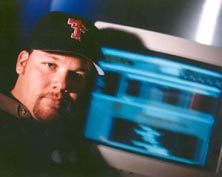

|
|
|
Chris Oglesby Interviews 
This is a conversation with John
Nelson formerly of Conway Studios in Los Angeles, now an independent
recording engineer and producer. John has recorded a wide range
of world-class artists including Dave Matthews; "Busted
Stuff" recently Number One on the charts.
John was born and reared in
Lubbock, as were both his parents. John grew up playing in Southwest
Lubbock garage bands. He became proficient in several musical
instruments: drums, bass, keyboards, harmonica (I've never seen
John pick up an instrument he couldn't either already play or
figure out in forty or so minutes). John also became interested
in equipment. Blessed with encouraging parents who happened to
have the means to "spoil" their kid, John began amassing
a set of sound equipment of which all the local players eventually
became aware. John became the "go-to guy" for working
sound at the limited number of music venues in town. He built
his own sound-room in the backyard. Whether he was howling with
a four piece band on stage or quietly hidden in the dark with
the mixing board, John was smack dab in the middle of the garage
band scene in Lubbock for almost fifteen years. John: You know that’s true: "Behind the scenes." [Laughing] If I had to wrap it all up in three words, it would be: "Behind the Scenes." Chris: That’s where you see everything that’s goin’ on. John: No. I understand. Well, that whole ‘80s scene - Everybody my age that was influenced by "Pop Culture", "Top 40 music" etc. Those of us who were in "Generation X" came up through Disco, and Roller-Boogie, and then almost overnight we were asked to accept Kiss and Motley Crue and Guns-N-Roses. It was Metal’s turn to take over the popular culture scene. Chris: Very good…Let’s talk about Metal music and Lubbock. I remember one year Kiss kicked off their world tour in Lubbock on Halloween night. Do you remember that? Or did I make that up? John: I was at the show. John: The Metal scene and Rock-n-Roll has always been a product of the "Immoral Majority" in Lubbock. There are always those that will fall into line and try to play inside the side-lines. And then there’s those whose responsibility it is to go over-the-top, out-of-bounds, as far and as wild as you can, and Heavy Metal is certainly, "As far and as wild as you can go" in Lubbock. Me and a lot of my friends - and a lot of blessed souls that are still there - were trying to push the boundaries. Ever since Greg Woolum and I were kids at school and were
so totally into Kiss where he and I began to drool on
our desks as though we were spitting up blood, emulating Gene
Simmons the "Bat/Lizard," sticking out our tongues.
One particular story is we were in art class one day at Mae Murphey
Elementary…And you remember the way Gene Simmons would spit
the blood in his little "blood-spitting" segment of
the show? It would slowly start to drool out and then he would
shake his head and the blood would go flyin’ everywhere.
So rather than blood, we would just drool all upon ourselves.
[Laughs.] We were in about Fourth Grade, y’know. And, y'know, I think that maybe that’s true: Babies do drool. But the trick is to be a 40 year-old baby. Now that's entertainment! Chris: Kiss was such a big deal in Lubbock at the period of time when we were growing up…There was all that "Knights In Satan’s Service" business...[Laughs] John: Yea. Or "Kings In Satan’s Service." Chris: And Kiss is so incredibly benign, really. Other than being loud and flashy, there's nothing much diabolical or threatening about Kiss. I guess it’s sort of sexual. John: Yea. That’s one great, wonderful thing about Lubbock: Is that if you were a part of the "Immoral Majority," you were always given credit for being way more clever and evil than you actually were, you know. You’re organizational skills were always top-notch, and you were certainly organized to take over. Chris: Who is this "Immoral Majority" you’re talking about? Who are these people: "The Immoral Majority"? John: The "little dark circles." I suppose we should get into the "Abbey Road scene."
Because to me…When I was 14 and 15 years old, that was our
entrée to the Metal scene. There were bands there that
were the Rock-n-Roll guys, five and six years older than us,
18 and 20 year olds, that we really looked up to. Chris: Well who were these guys? What was up with these guys? John: Downham was a choir singer; ultimately got a degree in music. John Griffith ultimately got a degree in music. Kent Tisdell played in bands for years…I was fortunate enough to play with Mike Farrell and Kent in a band later, called The Lloyds. I really looked up to all those guys. Really, our big treat was to go to Abbey Road, open for this band and make what Woolam and I called our "Taco Villa money." You make fifty bucks. What’s better? You get chicks. You kinda’ get to hang there at the bar, and you’re under-age, which is a big treat. And you know you’re not gonna’ get kicked out ‘cause you’re "the talent." Chris: Describe Abbey Road. John: Abbey Road was in a strip-mall on Slide Road, right near the Mall. It was the last door down at the end of the strip-mall. The owner was a guy named Carl Campanelli who was a long-time club owner in Lubbock. He’s owned several clubs, and he honestly was THE conduit for the Rock scene in Lubbock for a long time. He ultimately bought the Back Stage, over there on Slide and 34th, by the railroad tracks. That was later called New West. [John’s cell-phone rings.] Hi, honey baby. [Tape stops. Its our friend Denise Robnett, another expatriated Lubbock woman, keeping in touch.] Chris: [Resuming] So you were telling me about how you and Greg would go open for these bands at Abbey Road. John: We were a band called Shrapnel. Shrapnel was Rick Ramsey on drums...Who’s the best drummer ever in the god-damn world! He’s the best drummer ever. And he’s a dentist now. [NOTE: Now, remember John has worked with some pretty accomplished drummers, so this is a compliment that John does not make lightly. - c.o.] Chris: Wow. A dentist. Really? John: There are some guys that are just born to be
drummers. But Bumpy - we called Rick Ramsey "Bumpy"
- was the greatest. He was great. We were all just these sons of professionals, doctors and
lawyers, y’know? With instruments and equipment. The diplomat
for the group was Bartee. He hit the Abbey
Road scene and got us a gig opening for a band
called Deep Spirit.
Chad Bartee's dad is Dr. Bartee the dentist and is still in Lubbock
now. Chad’s got a successful medical sales company with
his brother. He was good friends with Woolam. The Southwest Little
League Baseball got those guys together. God Bless the Southwest
Little League Baseball. Chris: Alright. But that’s interesting though. John: That’s how you get music equipment when you're a kid: You have rich dads. Being in a band, you gotta’ stress your resources. Chris: You say, "You’re gonna’ give
me this extra allowance, so I’m gonna spend it on equipment,
and I’m gonna’ build a sound-room, or I’m gonna’
put together a band." -continued- |
| home | Interviews | Stories | Pictures | Lyrics | What's New? |
|
About Us |
|
Copyright 2002 |